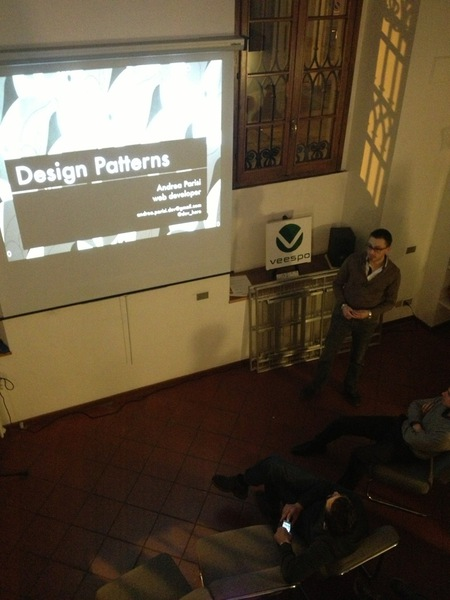
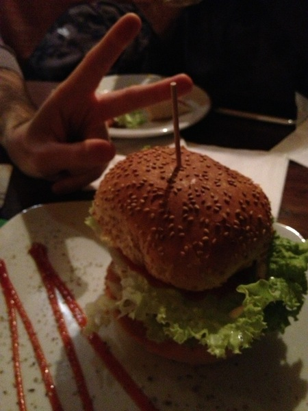

Appsterdam è un'associazione nata da un'idea di Mike Lee, sviluppatore iOS di fama mondiale, che ha deciso di creare in Olanda una rete di professionisti nell'ambito del mondo delle applicazioni - siano esse mobile, web, embedded o desktop. Il gruppo promuove la cultura digitale in maniera completa: tra di noi ci sono soprattutto sviluppatori e designer, ma la nostra comunità include anche esperti di comunicazione, di marketing, di economia o legge; ogni singola idea è valida e può trovare ospitalità in Appsterdam. Da Febbraio del 2012, Appsterdam apre la sua ambasciata a Milano per offrire i propri servizi anche al pubblico italiano, permettendo così visibilità a livello internazionale.

giovedì 17 gennaio / ore 19.00
Appsterdam TalkLab
«organizzato da Gianfranco Reppucci, Alessio Roberto »
giovedì 17 gennaio / ore 19.00
tbo
giovedì 21 febbraio / ore 19.00
Appsterdam TalkLab
«organizzato da Gianfranco Reppucci, Alessio Roberto»
giovedì 21 febbraio / ore 19.00
tbo

giovedì 14 marzo / ore 19.00
Appsterdam TalkLab
«organizzato da Gianfranco Reppucci, Alessio Roberto
giovedì 14 marzo / ore 19.00
tbo